Explore All Nepal Trekking Packages
Handcrafted itineraries, licensed Sherpa guide leadership, and 100% safety commitment across Nepal's iconic classic circuits and remote wilderness frontiers.
Filter & Search Trekking Packages
Instant results updated in real-timeShowing All 60 Available Treks
Guaranteed Departures • 100% Sherpa Led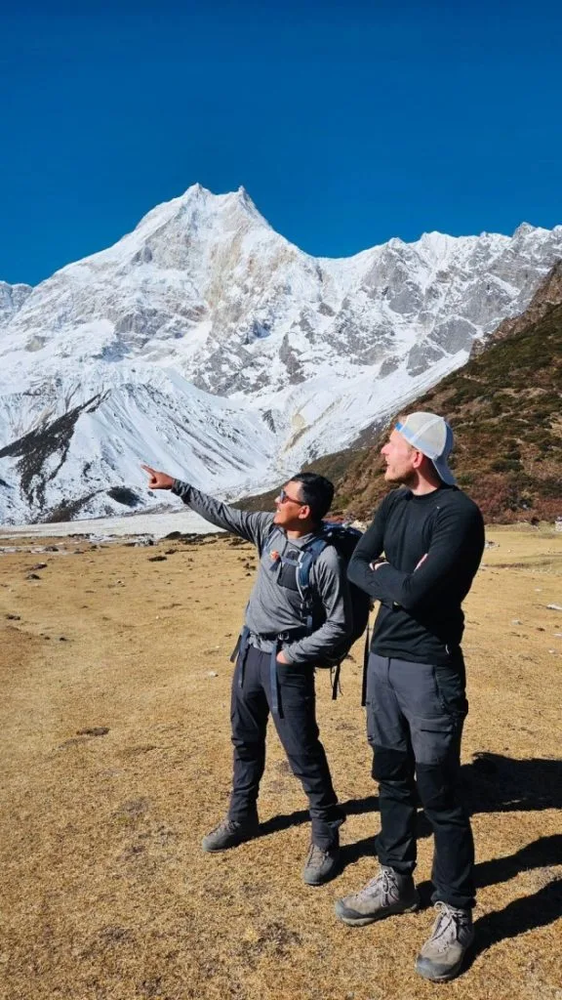
Fast Track Circuit ⏱️ 12 DaysManaslu Circuit Trek 12 Days
Fast-track 12-day circumambulation of Mount Manaslu via Machha Khola and Larkya La 5,106m.
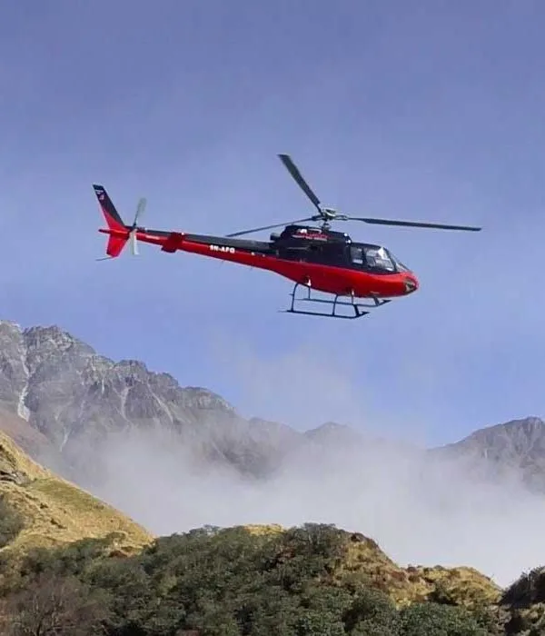
Heli Flyback ⏱️ 8 DaysABC Trek with Helicopter Return
Trek to 4,130m Annapurna Base Camp and fly back to Pokhara by private charter helicopter.
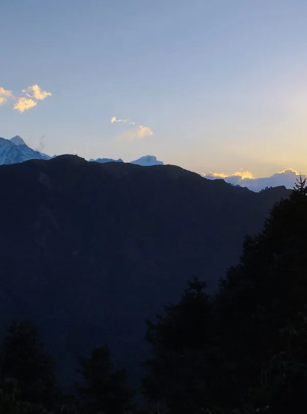
Annapurna Combo ⏱️ 9 DaysGhorepani Poon Hill with Mardi Himal
Combine Poon Hill sunrise (3,210m) with Mardi Himal Base Camp ridge (4,500m) in 9 days.
 Dual Ascent
⏱️ 12 Days
Dual Ascent
⏱️ 12 Days
ABC with Mardi Himal Trek
The definitive dual mountain trek: Annapurna Sanctuary glacier basin plus high Mardi ridge.
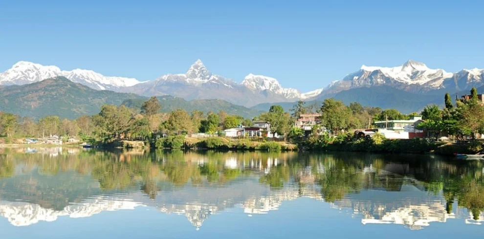
Luxury Heritage ⏱️ 7 DaysAnnapurna Luxury Lodge Trek
Explore Annapurna in supreme comfort, staying at boutique mountain lodges with fine dining.
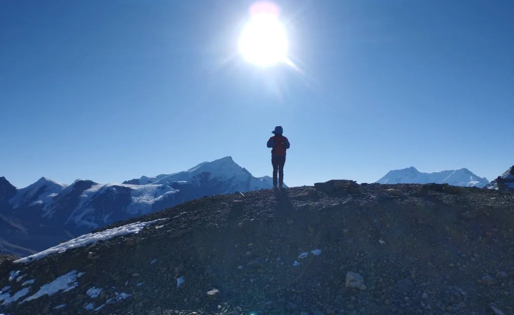
VIP Circuit ⏱️ 12 DaysAnnapurna Circuit Luxury Trek
Thorong La Pass (5,416m) crossing with private 4WD support, boutique lodges, and 5-star resorts.
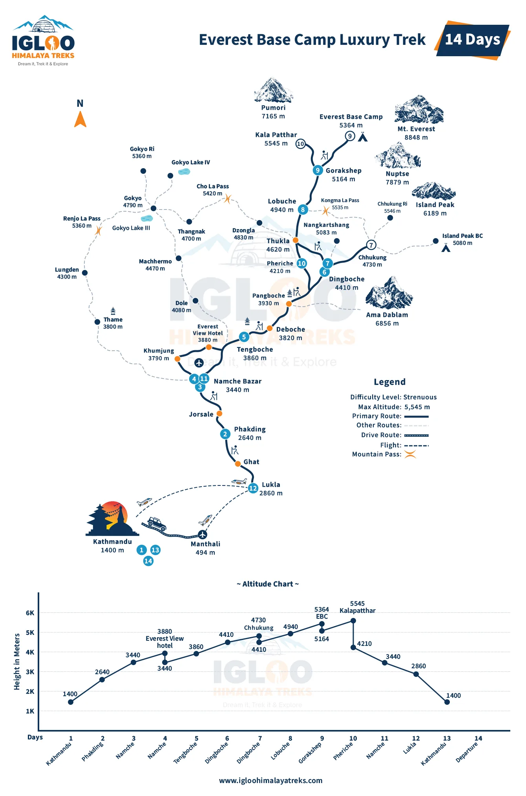
Luxury Lodge ⏱️ 12 DaysEverest Base Camp Luxury Trek
Trek to Everest Base Camp with heated luxury lodges, en-suite bathrooms, and gourmet dining.
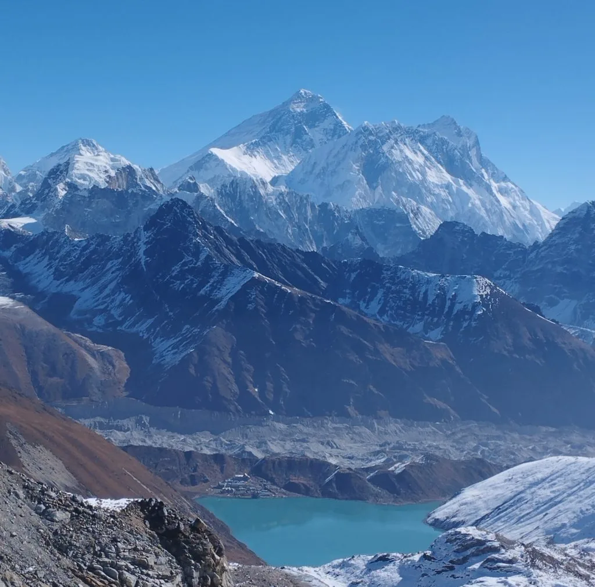
Luxury Lodge ⏱️ 11 DaysGokyo Lakes Luxury Trek
Turquoise alpine lakes and panoramic summit of Gokyo Ri (5,357m) with comfort lodge accommodations.
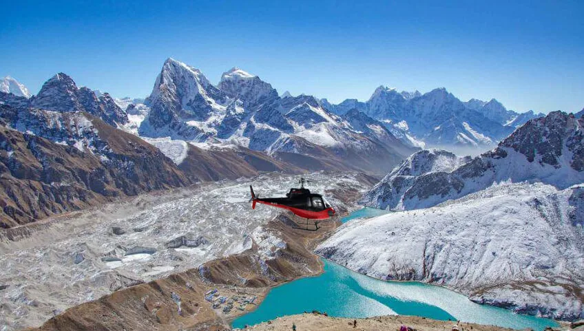
Heli Flyback ⏱️ 10 DaysGokyo Lake Trek with Heli Return
Trek to Gokyo Lakes and Gokyo Ri, then fly back to Kathmandu or Lukla directly via private helicopter.
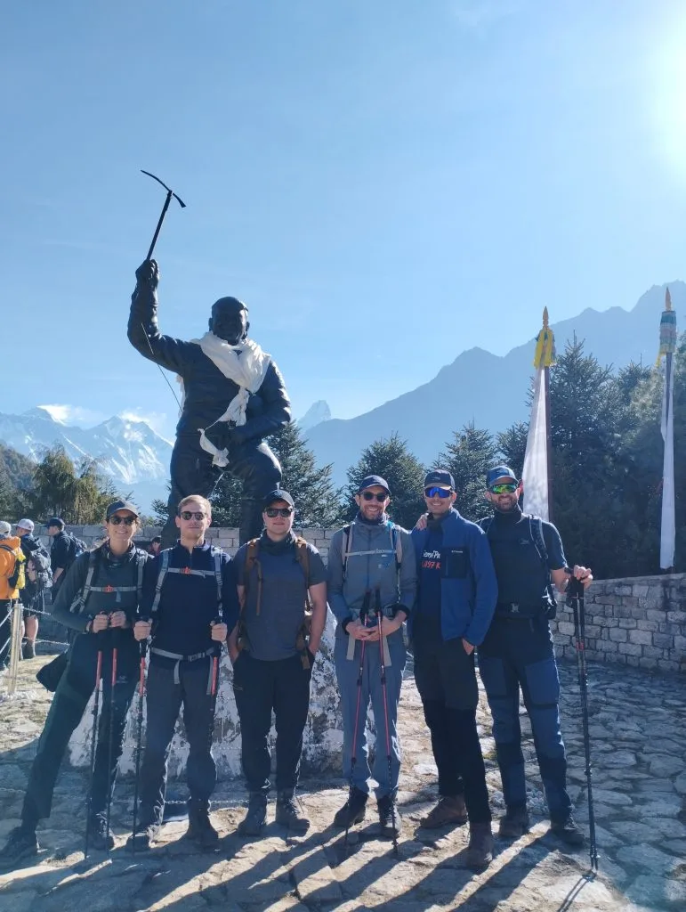
Overland Jeep Route ⏱️ 18 DaysEverest Base Camp (Road Based)
Overland jeep journey to Salleri / Paiya, eliminating Lukla flight weather delays entirely.
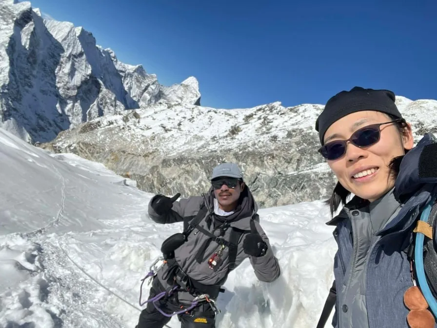
6,000m Peak ⏱️ 19 DaysIsland Peak Climbing & EBC
Summit 6,189m Island Peak via headwall fixed ropes after acclimatizing at Everest Base Camp.
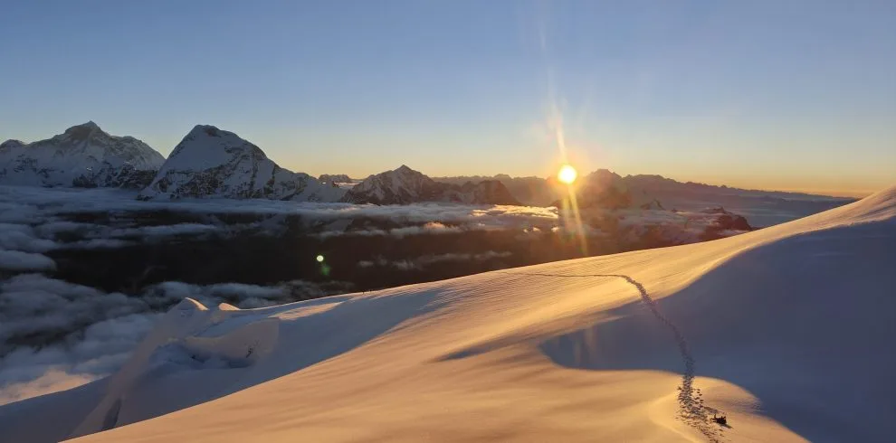
Highest Trekking Peak ⏱️ 18 DaysMera Peak Climbing Expedition
Reach 6,476m for an incomparable panorama of 5 of the world's 14 8,000-meter giants.
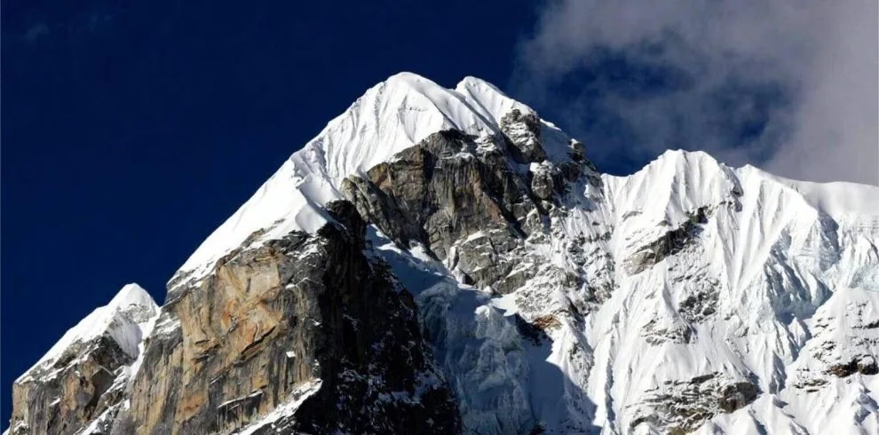
Alpine Technical ⏱️ 18 DaysLobuche East Peak Climbing
Climb 6,119m via snow ridges facing Everest south face, Nuptse, and Ama Dablam.
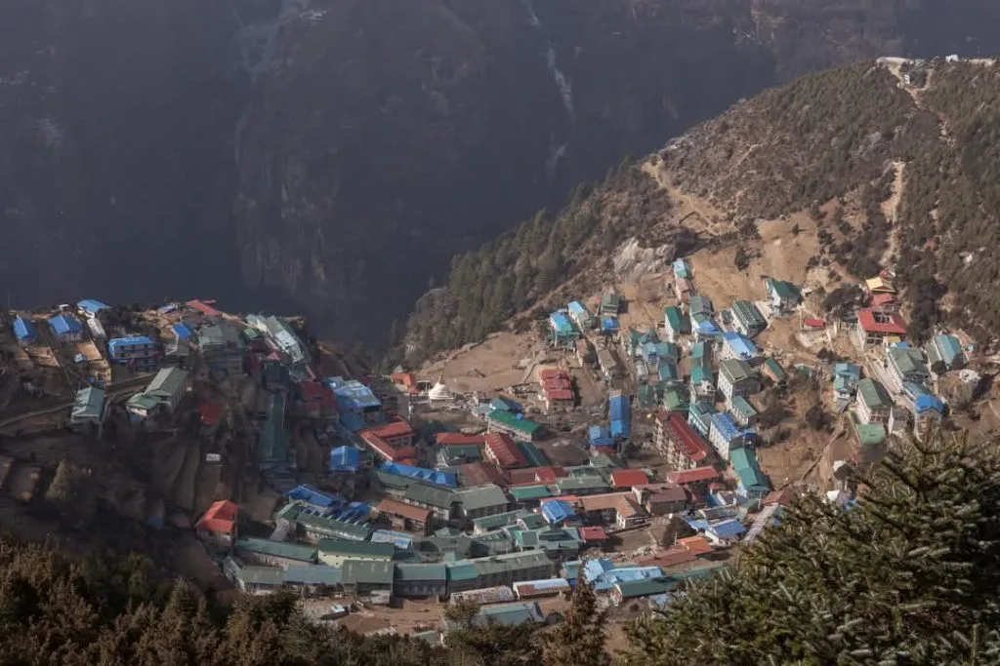
Ultimate Circuit ⏱️ 21 DaysThree Passes with Island Peak
Kongma La, Cho La, and Renjo La pass crossings combined with a 6,189m alpine summit.
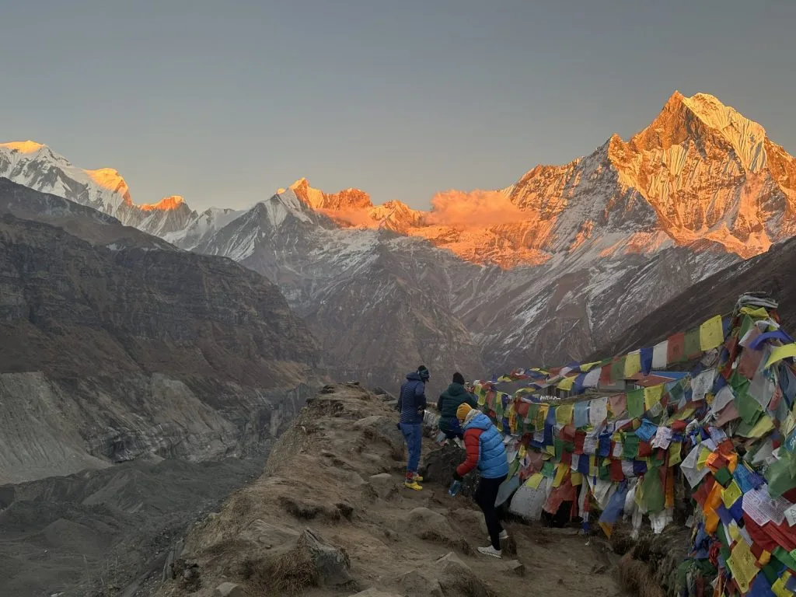
Fast Track ⏱️ 6 DaysShort Annapurna Base Camp Trek
Direct express ascent to 4,130m Annapurna Base Camp for fit hikers with limited time.
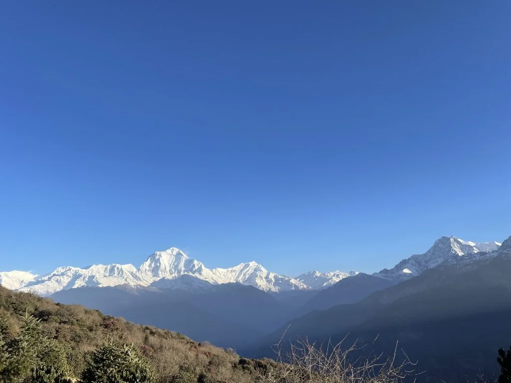
Introductory ⏱️ 4 DaysAnnapurna Short Trek
Scenic 4-day introductory loop visiting Poon Hill (3,210m) and Gurung heritage in Ghandruk.
 Everest Region
⏱️ 14 Days
Everest Region
⏱️ 14 Days
Everest Base Camp Trek
Trek to Kala Patthar (5,545m) and stand before Mount Everest. Authentic Sherpa culture and monastery visits.
 Annapurna Region
⏱️ 16 Days
Annapurna Region
⏱️ 16 Days
Annapurna Circuit Trek
Cross Thorong La Pass (5,416m), experience Manang village, and explore Muktinath sacred temple.
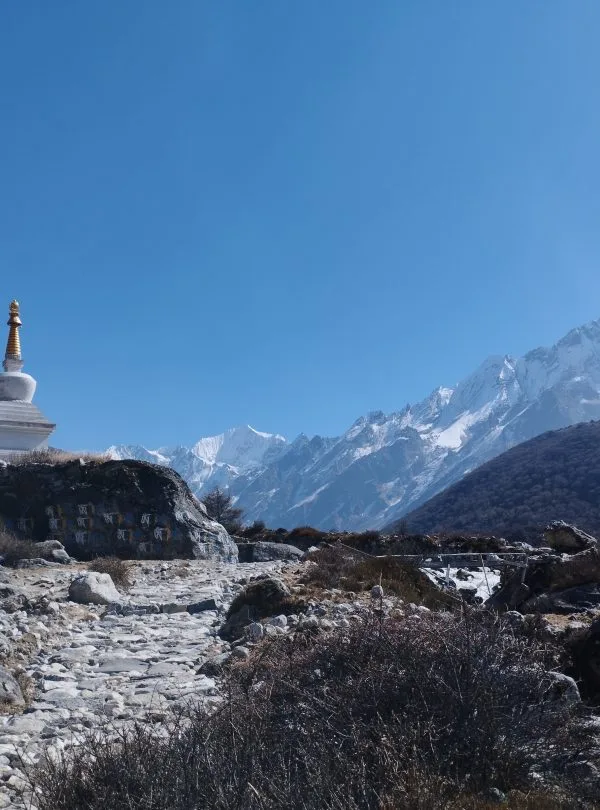
Langtang Region ⏱️ 8 DaysLangtang Valley Trek
Explore the valley of glaciers close to Kathmandu. Visit Kyanjin Gompa and summit Kyanjin Ri peak.
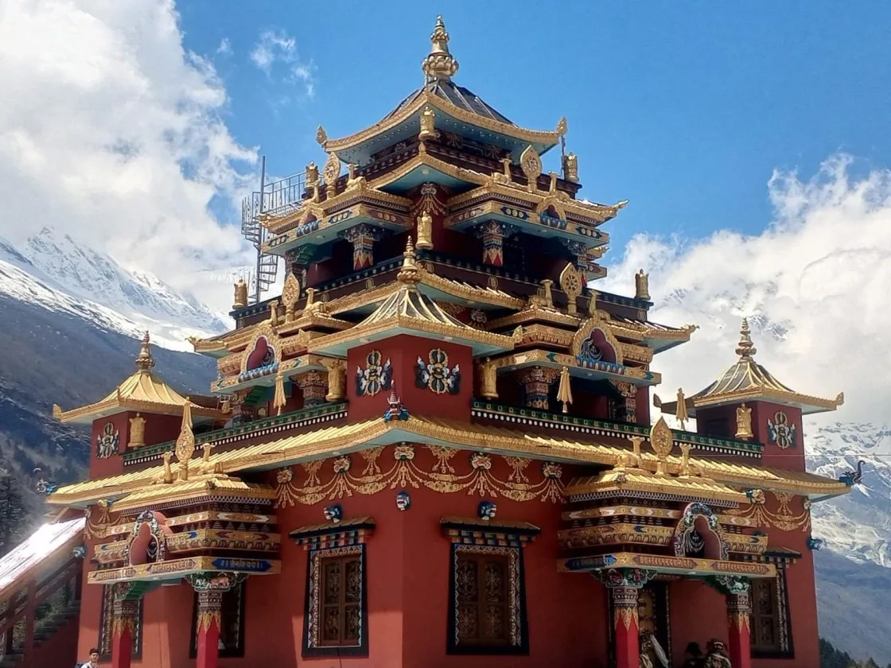
Manaslu Region ⏱️ 14 DaysManaslu Circuit Trek
Circumnavigate Mount Manaslu via restricted Larke La Pass (5,106m). Authentic Tibetan Buddhist heritage.
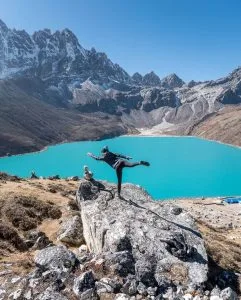
Everest Region ⏱️ 15 DaysGokyo Lakes & Cho La Pass
Turquoise high-altitude Gokyo lakes, Cho La glacier pass crossing, and Everest Base Camp loop.
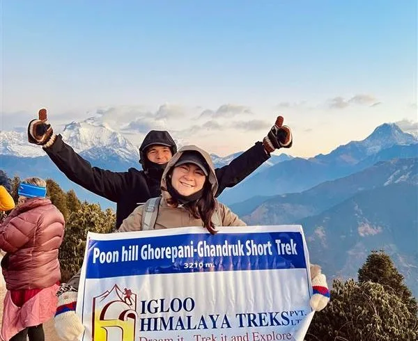
Annapurna Region ⏱️ 5 DaysGhorepani Poon Hill Trek
Panoramic sunrise over Annapurna & Dhaulagiri massifs from Poon Hill. Rhododendron forest trails.
 Mustang Region
⏱️ 12 Days
Mustang Region
⏱️ 12 Days
Upper Mustang Trek
Journey to the Last Forbidden Kingdom of Lo Manthang. Ancient caves, Tibetan Buddhist palaces, and rain-shadow canyon trails.
 4WD Overland Tour
⏱️ 12 Days
4WD Overland Tour
⏱️ 12 Days
Upper Mustang Jeep Tour
Overland 4WD expedition across Kali Gandaki gorge to Lo Manthang & Chhoser sky caves.
 Cultural Festival
⏱️ 15 Days
Cultural Festival
⏱️ 15 Days
Upper Mustang Tiji Festival Trek
Witness the 3-day spiritual Tiji mask dance celebration inside medieval Lo Manthang.
Annapurna Region
⏱️ 10 Days
Annapurna Base Camp (ABC)
Trek through Machhapuchhre (Fishtail) Base Camp into the 360-degree mountain amphitheater of Annapurna Sanctuary.
 Everest Region
⏱️ 19 Days
Everest Region
⏱️ 19 Days
Everest Three Passes Trek
Ultimate Everest circuit crossing Kongma La, Cho La, and Renjo La high passes.
 Everest Region
⏱️ 12 Days
Everest Region
⏱️ 12 Days
Gokyo Lakes Trek
Discover six turquoise high-altitude lakes and Gokyo Ri 5,357m viewpoint.
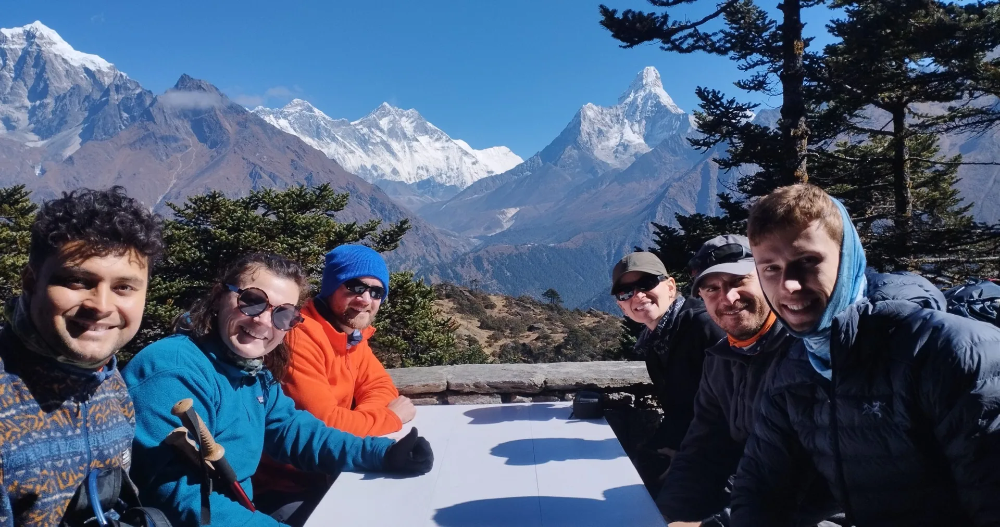
Everest Region ⏱️ 7 DaysEverest View Trek
Short, luxury panorama trek to Namche Bazaar & Everest View Hotel.
Everest Region
⏱️ 16 Days
Everest Base Camp via Gokyo Lakes
Combine Gokyo Lakes, Cho La Pass, and Everest Base Camp into one grand loop.
 Annapurna Region
⏱️ 6 Days
Annapurna Region
⏱️ 6 Days
Mardi Himal Trek
Ridge trekking to Mardi Himal High Camp 4,500m right under Fishtail peak.
Annapurna Region
⏱️ 8 Days
Khopra Ridge Trek
Off-the-beaten-track ridge trail to Khayer Lake 4,660m with Dhaulagiri views.
Annapurna Region
⏱️ 12 Days
Nar Phu Valley Trek
Explore hidden medieval Tibetan stone villages and Kang La Pass 5,306m.
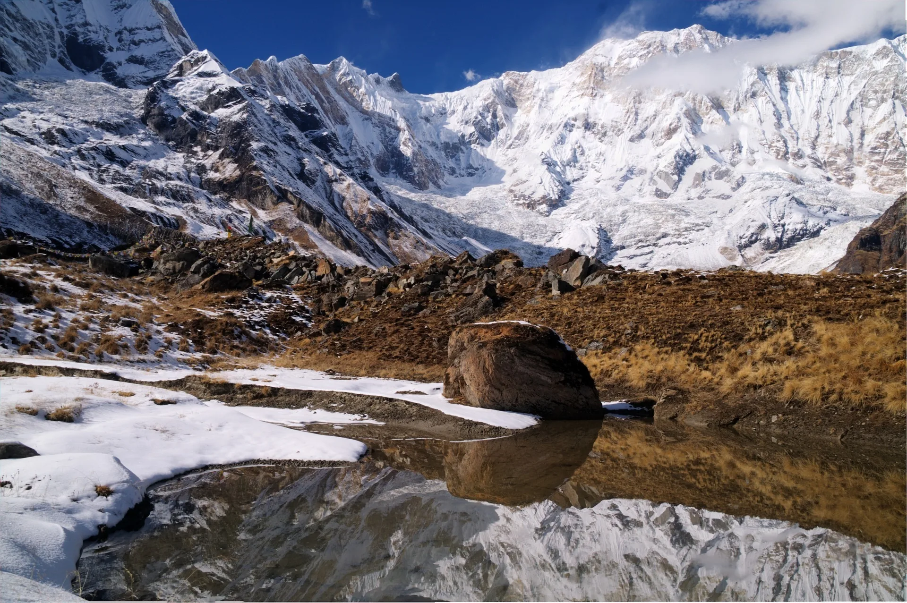
Annapurna Region ⏱️ 11 DaysAnnapurna Sanctuary Trek
Classic expedition into Annapurna mountain amphitheater & hot springs.
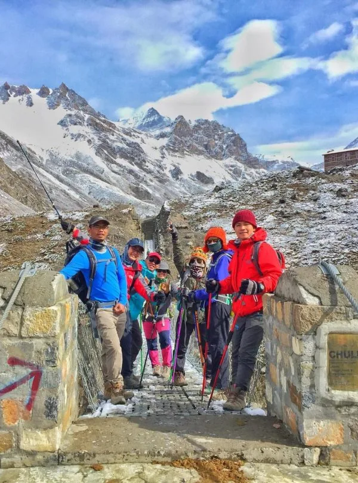
Annapurna Region ⏱️ 14 DaysTilicho Lake Trek
Visit the world's highest glacial lake at 4,919m along Thorong La Circuit.
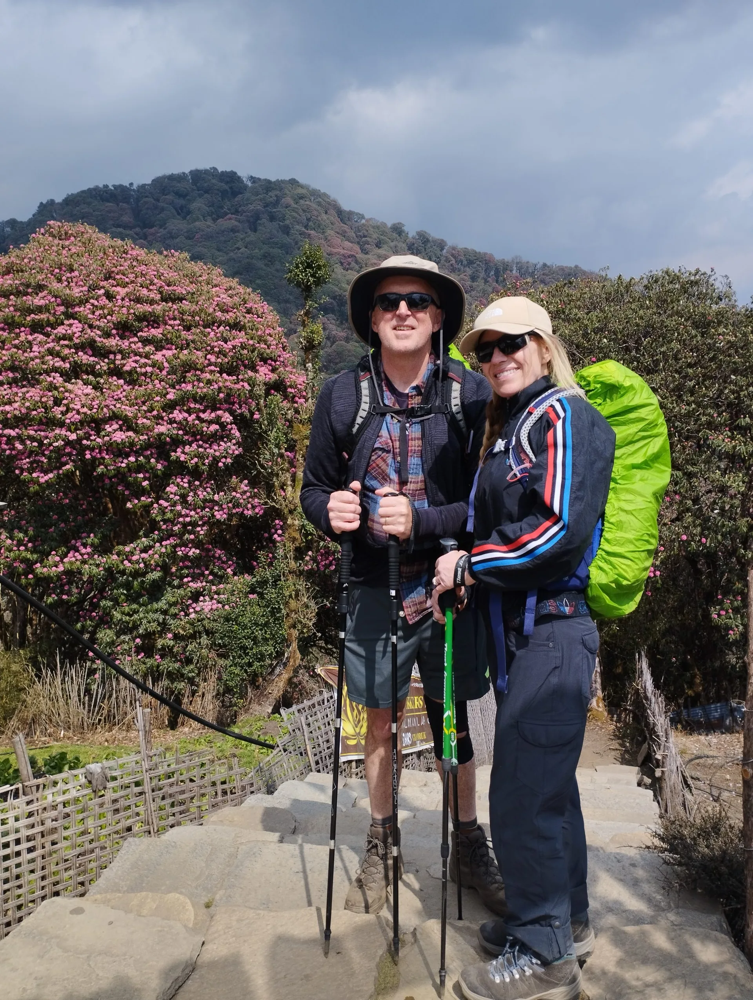
Annapurna Region ⏱️ 12 DaysPoon Hill & ABC Trek
Combined sunrise itinerary merging Ghorepani Poon Hill and Annapurna Sanctuary.
Langtang Region
⏱️ 7 Days
Gosaikunda Lake Trek
Pilgrimage trek to sacred alpine lakes at 4,380m and Lauribina Pass.
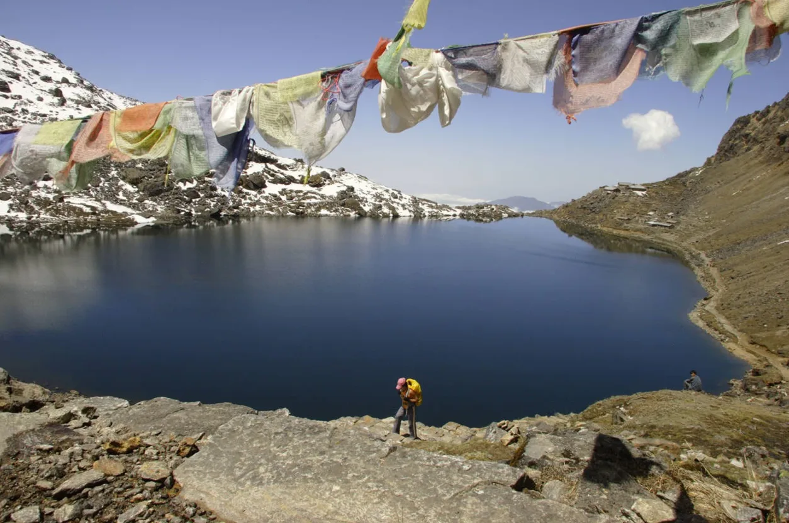
Langtang Region ⏱️ 12 DaysLangtang Gosaikunda Trek
Grand Langtang trek merging Kyanjin Gompa and sacred Gosaikunda lakes.
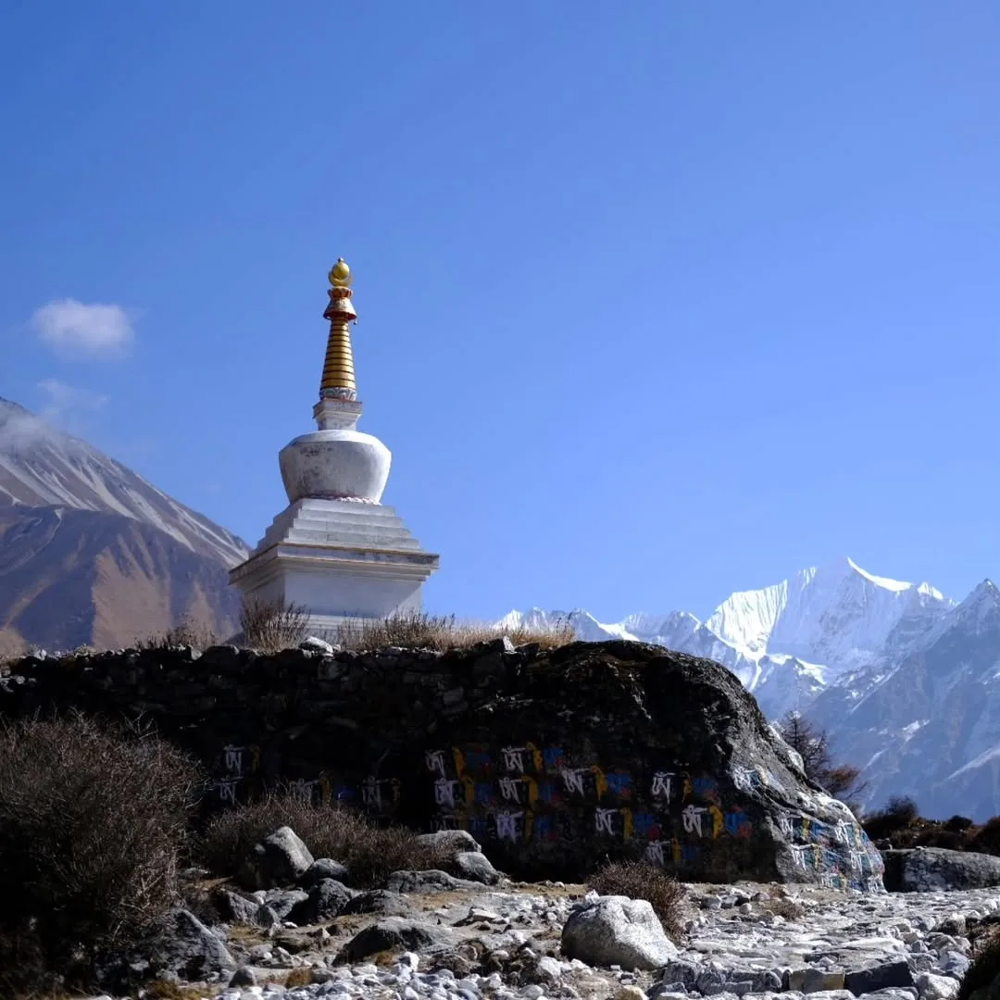
Langtang Region ⏱️ 8 DaysTamang Heritage Trail Trek
Cultural trek through ancient Tamang villages, hot springs, and Tibetan crafts.
 Langtang Region
⏱️ 6 Days
Langtang Region
⏱️ 6 Days
Helambu Trek
Accessible cultural circuit north of Kathmandu with Hyolmo Buddhist villages.
Manaslu Region
⏱️ 14 Days
Tsum Valley Trek
Sacred valley of happiness with ancient Mu Gompa and Tibetan culture.
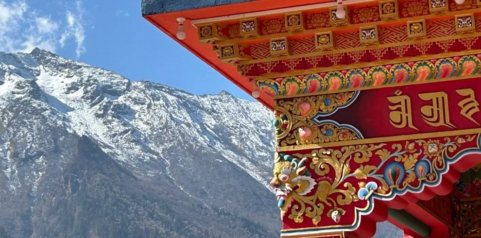
Manaslu Region ⏱️ 18 DaysManaslu Tsum Valley Trek
Combined expedition merging sacred Tsum Valley and Larke La Pass 5,106m.
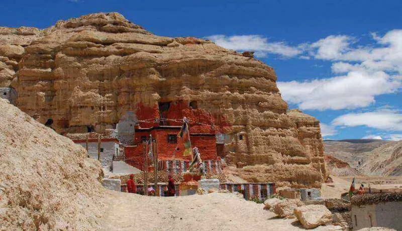
Mustang Region ⏱️ 8 DaysLower Mustang Trek
Muktinath temple, Marpha apple orchards, and Kali Gandaki gorge walk.
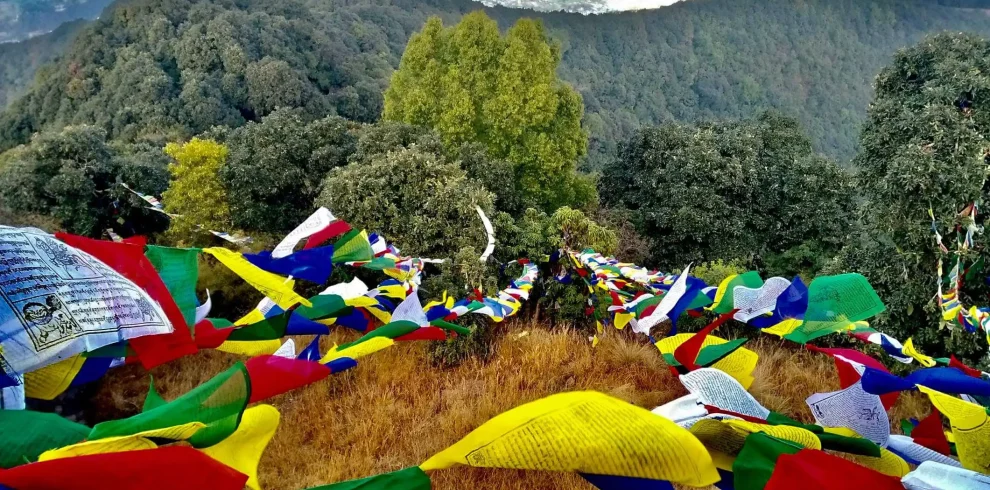
Everest Region ⏱️ 7 DaysPikey Peak Trek
Edmund Hillary's favorite sunrise viewpoint of Mount Everest 4,065m.
Annapurna Region
⏱️ 5 Days
Mohare Danda Trek
Eco-community ridge trek with spectacular Annapurna sunrise panoramas.
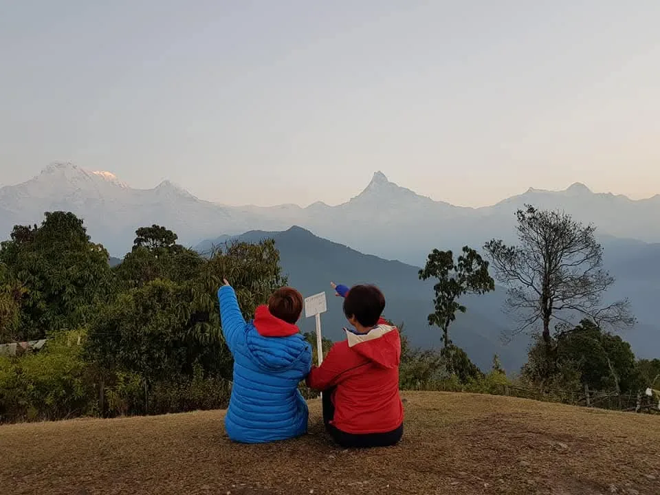
Annapurna Region ⏱️ 4 DaysPanchase Trek
Gentle Pokhara foothill trek rich in orchid forests and mountain views.
 Remote Wilderness
⏱️ 9 Days
Remote Wilderness
⏱️ 9 Days
Ruby Valley Trek
Hidden Ganesh Himal trail passing zinc and ruby mines and Gurung villages.
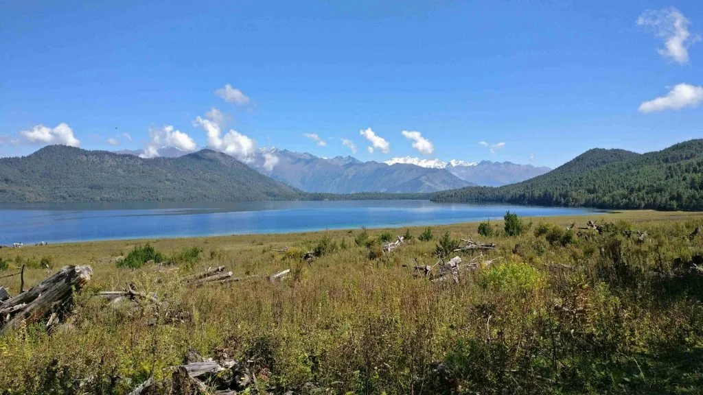
Remote Wilderness ⏱️ 10 DaysRara Lake Trek
Journey to Nepal's largest & deepest alpine lake in remote western Jumla.
Remote Wilderness
⏱️ 18 Days
Makalu Base Camp Trek
Wild, pristine trail to the base of the world's 5th highest mountain 5,250m.
 Remote Wilderness
⏱️ 22 Days
Remote Wilderness
⏱️ 22 Days
Kanchenjunga Base Camp Trek
Far-eastern wilderness expedition to North & South Kanchenjunga Base Camps.
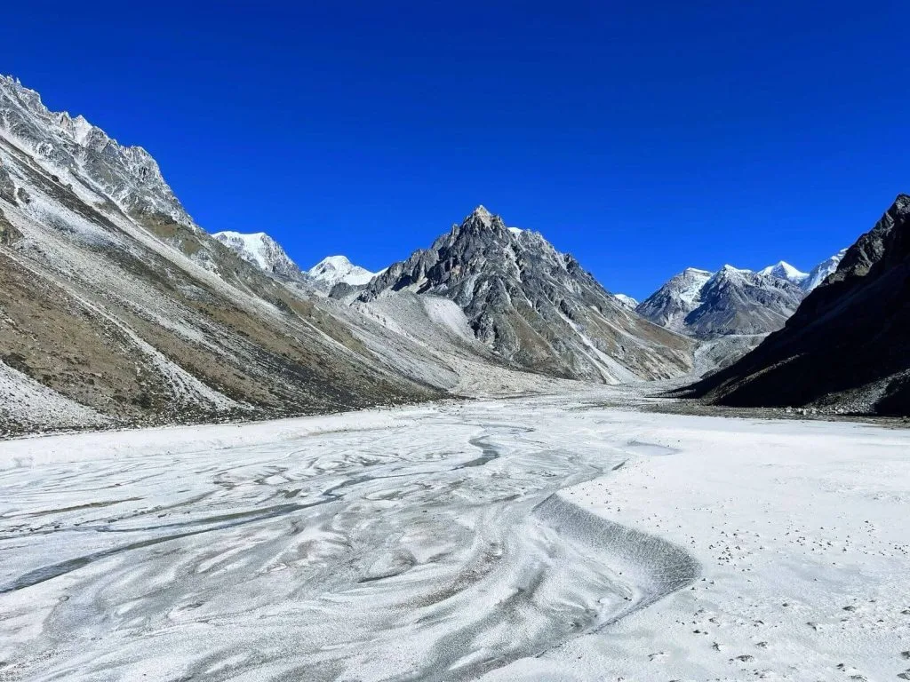
Remote Wilderness ⏱️ 22 DaysKanchenjunga Circuit Trek
Complete expedition visiting North (Pangpema 5,143m) & South Base Camps via Sele La Pass.
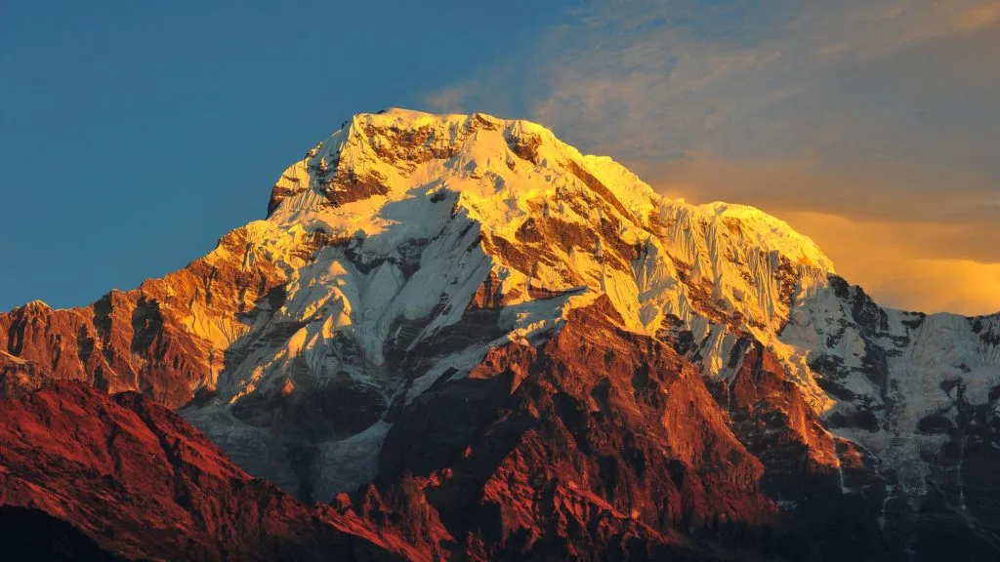
Road-Based Overland ⏱️ 24 DaysKanchenjunga Trek Without Flight
100% flight-delay-free road expedition via scenic Ilam tea estates and full dual base camps.
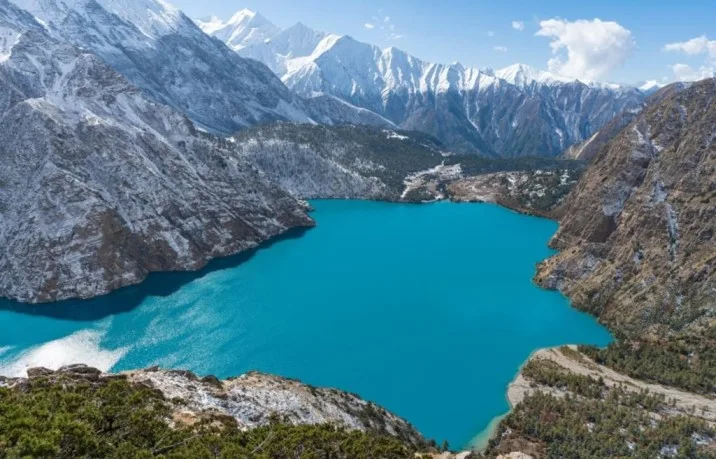
Restricted Area ⏱️ 18 DaysLower Dolpo Trek
Circuit across crystal turquoise Shey Phoksundo Lake, Bon Po villages, and Numa La Pass (5,309m).
 Trans-Himalayan Expedition
⏱️ 24 Days
Trans-Himalayan Expedition
⏱️ 24 Days
Upper Dolpo Trek
The legendary 24-day Himalayan wilderness odyssey to Shey Gompa, Crystal Mountain, and Kang La (5,360m).
Valley Rim Classic
⏱️ 3 Days
Chisapani Nagarkot Trek
Hike through Shivapuri National Park to Chisapani pass and witness sunrise over Everest from Nagarkot.
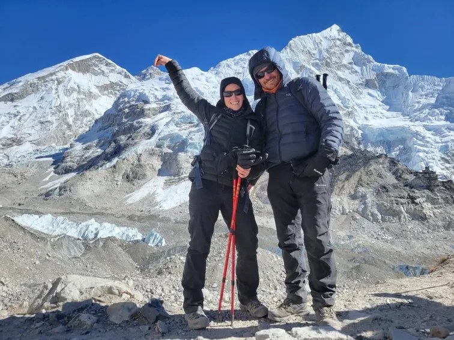
Remote Wilderness ⏱️ 18 DaysDhaulagiri Circuit Trek
Extreme high-altitude expedition across French Pass 5,360m and Dhaulagiri glacier.
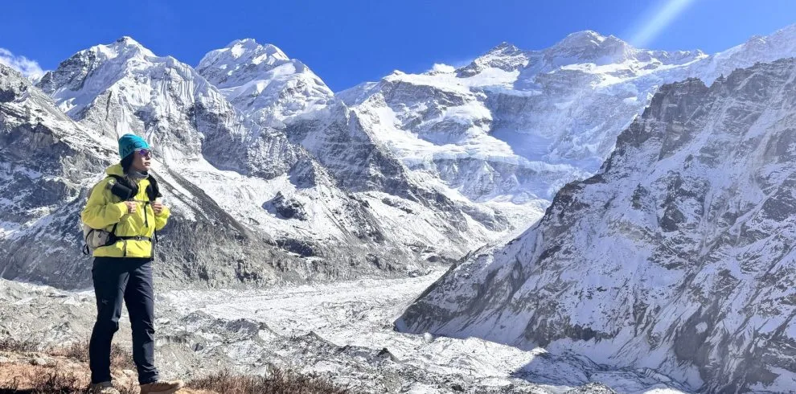
Remote Wilderness ⏱️ 15 DaysRolwaling Valley Trek
Trek past Tsho Rolpa glacial lake and Tashi Lapcha Pass 5,755m into Khumbu.
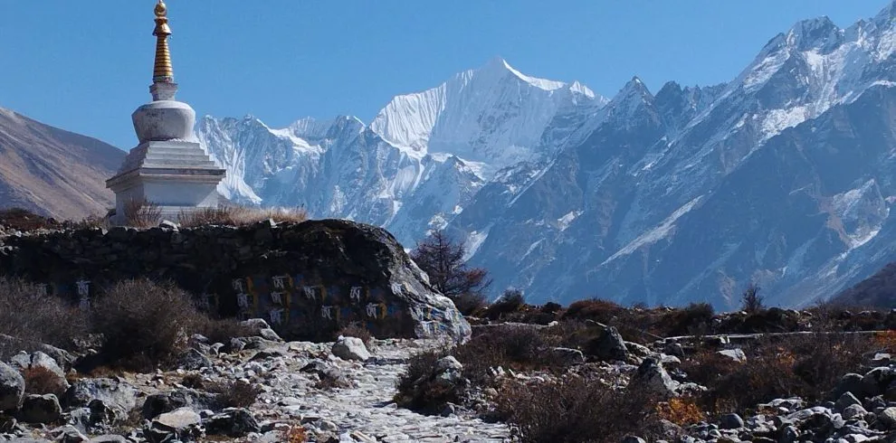
Non-Technical Peak ⏱️ 11 DaysYala Peak Climbing
Ideal first Himalayan summit climb (5,500m) in Langtang Valley with panoramic vistas of Shishapangma 8,013m.
Manaslu Circuit with Tsum Valley
Full 22-day grand journey combining sacred Tsum Valley monasteries with Mount Manaslu circumambulation.
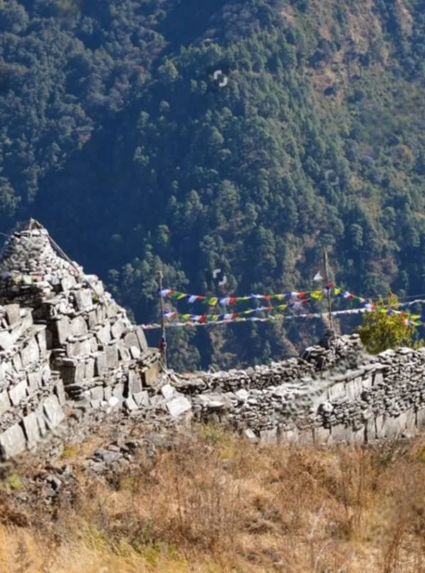
Culture & Glaciers ⏱️ 14 DaysTamang Heritage with Langtang Valley
Comprehensive 14-day loop pairing warm Tibetan homestays in Gatlang with alpine heights of Kyanjin Gompa.
No matching trekking packages found
We couldn't find any trek packages matching your current filter criteria. Try broadening your duration, difficulty, or region selections.
Don't see your dream trekking route?
We specialize in tailor-made Himalayan itineraries, private departures, custom side-trips, and luxury helicopter returns.
Plan A Custom Itinerary